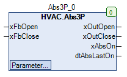

Abs3P (FB)¶
FUNCTION_BLOCK Abs3P
Short Description¶
Anti-anti-lock for a 3-point drive
Portrayal¶

Interfaces¶
Inputs¶
Name Datatype
Range
Init-Value
Functional Description
xFbOpen BOOL Message - Inbox - Plus
XFbClose BOOL Message - Input - Minus
Outputs¶
Name Datatype
Range
Init-Value
Functional Description
xOutOpen BOOL Enable - Output - Plus
xOutClose BOOL Enable - Output - Minus
xAbsOn BOOL Anti-anti-lock process
dtAbsLastOn DATE_AND_TIME Startdate / -Timepoint of the last anti-lock process
Setpoints / Parameters¶
Name Datatype
Range
Init-Value
Functional Description
tMinRunTime TIME 30s Minimum operating time
tTime TIME 120s Time duration of the anti-lock process
eDay eDoW eDow.Monday
Weekday of anti-lock process
todStartTime TOD 08:00:00 Uhr Time point of the anti-lock process
Functional Description¶
General¶
Example
Prerequisite for the use of the Abs3P functional component
Enable - Output xOutOpen¶
xFbOpen anti-lock process
xOutOpen Notes
X FALSE FALSE anti-lock process inactive
X TRUE TRUE anti-lock process active - period 1
X TRUE FALSE anti-lock process active - period 2
Enable - Output xOutClose¶
xFbClose anti-lock process
xOutClose Notes
X FALSE FALSE anti-lock process inactive
X TRUE FALSE anti-lock process active - period 1
X TRUE TRUE anti-lock process active - period 2
Display of the anti-lock process xAbsOn¶
Setpoint / Parameter eDay¶
Setpoint / Parameter**tTime**¶
Visualization¶
Codesys¶
- InOut:
Scope Name Type Initial Comment Input xFbOpen BOOL Message - Inbox - Plus
xFbClose BOOL Message - Input - Minus
tMinRunTime TIME TIME#30s0ms Minimum operating time
tTime TIME TIME#2m0s0ms Time duration of the anti-lock process
eDay eDoW eDow.Monday Weekday of anti-lock process
todStartTime TOD TIME_OF_DAY#8:0 Time point of the anti-lock process
Output xOutOpen BOOL Enable - Output - Plus
xOutClose BOOL Enable - Output - Minus
xAbsOn BOOL Anti-anti-lock process
dtAbsLastOn DT Startdate / -Timepoint of the last anti-lock process